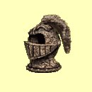

Magie zemì
Omráèení
Mana: 1, Cena: 100, Potøebná úroveò dovednosti: Normální
Uhodí nestvùru magickou silou, znemo¾òujíce jí zaútoèit. Zároveò ji také odhodí dozadu, tak¾e dru¾ina má ¹anci utéct èi zaútoèit, ne¾ se nestvùra probere. Vìt¹í dovednost v Magii Zemì znamená vìt¹í úèinek kouzla.
| Normální | Normální efekt | |
| Expert | Silnìj¹í efekt | |
| Mistr | Silnìj¹í efekt | |
| Velmistr | Nejsilnìj¹í efekt |
Zpomalení
Mana: 2, Cena: 200, Potøebná úroveò dovednosti: Normální
Sni¾uje rychlost chùze a zvy¹uje dobu potøebnou k zotavení samostatné nestvùry. Zpomalení také zpùsobí, ¾e nestvùra mù¾e zaútoèit ménì èasto a nechytí tì, pokud se rozhodne¹ utéct. Doba trvání kouzla je 1 minuta za bod dovednosti v Magii Zemì.
| Normální | Normální efekt | |
| Expert | Doba trvání 5 minut za bod dovednosti | |
| Mistr | Nestvùra je zpomalená na 1/4 své rychlosti | |
| Velmistr | Nestvùra je zpomalená na 1/8 své rychlosti |
Odolnost proti zemi
Mana: 3, Cena: 300, Potøebná úroveò dovednosti: Normální
Zvy¹uje odolnost v¹ech tvých postav proti kouzlùm Magie Zemì o mno¾ství úmìrné tvým bodùm dovednosti Magie Zemì. Efekt trvá hodinu za ka¾dý bod dovednosti.
| Normální | 1 bod odolnosti za bod dovednosti | |
| Expert | 2 bod odolnosti za bod dovednosti | |
| Mistr | 3 bod odolnosti za bod dovednosti | |
| Velmistr | 4 bod odolnosti za bod dovednosti |
Smrtící roj
Mana: 4, Cena: 400, Potøebná úroveò dovednosti: Normální
Na samostatný cíl se¹le roj hmyzu, který kou¹e a bodá. Roj zpùsobí 5 bodù zranìní plus 1-3 body za bod dovednosti Magie Zemì, v¾dy trefí cíl.
| Normální | Støednì rychlé zotavení | |
| Expert | Rychlej¹í zotavení | |
| Mistr | Rychlej¹í zotavení | |
| Velmistr | Nejrychlej¹í zotavení |
Kamenná kù¾e
Mana: 5, Cena: 500, Potøebná úroveò dovednosti: Expertní
Zvy¹uje tøídu zbroje v¹ech tvých postav o 5 plus 1 bod za bod Magie Zemì.
|  | Normální | n/a |
| Expert | Doba trvání 1 hodina + 5 minut za bod dovednosti | |
| Mistr | Doba trvání 1 hodina + 15 minut za bod dovednosti | |
| Velmistr | Doba trvání 1 hodina + 1 hodina za bod dovednosti |
Èepele
Mana: 8, Cena: 750, Potøebná úroveò dovednosti: Expertní
Vystøelí ostrou rotující èepel na samostatný cíl. Èepel zpùsobí 1-9 bodù zranìní za bod dovednosti v Magii Zemì.
| Normální | n/a | |
| Expert | Støední doba zotavení | |
| Mistr | Rychlej¹í doba zotavení | |
| Velmistr | Nejrychlej¹í doba zotavení |
Odkamenìní
Mana: 10, Cena: 1000, Potøebná úroveò dovednosti: Expertní
Odstraní zkamenìní, pokud zakouzlí¹ toto kouzlo vèas. Vy¹¹í dovednost v Magii Zemì umo¾òuje kouzlit kouzlo po del¹í dobì zkamenìní, dokud nebyl dosáhnut "bod, z kterého není návratu". Poté u¾ zbývá jen nav¹tívit chrám.
| Normální | n/a | |
| Expert | Funguje, pokud je postava zkamenìlá ménì ne¾ 1 hodinu za bod dovednosti | |
| Mistr | Funguje, pokud je postava zkamenìlá ménì ne¾ 1 den za bod dovednosti | |
| Velmistr | Bez èasového limitu |
Kamenný výbuch
Mana: 15, Cena: 1500, Potøebná úroveò dovednosti: Mistrovská
Vykouzlí magický kámen, který exploduje, pokud se dostane do blízkosti nestvùry, nebo vypr¹í jeho èas. Kámen se bude odrá¾et a kutálet dokud neexploduje, nebo nenajde místo "odpoèinku", tak¾e se sna¾ nedostat se do jeho blízkosti. Exploze zpùsobí 10 bodù zranìní plus 1-10 za bod dovednosti v Magii Zemì.
| Normální | n/a | |
| Expert | n/a | |
| Mistr | Støednì rychlé zotavení | |
| Velmistr | Rychlej¹í zotavení |
Telekineze
Mana: 20, Cena: 2000, Potøebná úroveò dovednosti: Mistrovská
Telekineze ti umo¾ní manipulovat s pøedmìty na dálku. Mù¾e¹ maèkat tlaèítka, zvedat objekty, otevírat dveøe ... v¹echno z bezpeèné vzdálenosti pøed pastmi.
| Normální | n/a | |
| Expert | n/a | |
| Mistr | Rychlej¹í zotavení | |
| Velmistr | Nejrychlej¹í zotavení |
Kvìt smrti
Mana: 25, Cena: 3000, Potøebná úroveò dovednosti: Mistrovská
Vystøelí magický kámen do vzduchu, kde exploduje. Úlomky kamene poté spadnou na zem a zpùsobí 20 bodù zranìní plus 2 body za bod dovednosti v Magii Zemì. Kouzlo mù¾e být pou¾ito pouze venku.
| Normální | n/a | |
| Expert | n/a | |
| Mistr | Støednì rychlé zotavení | |
| Velmistr | Rychlej¹í zotavení, dvojitý efekt |
Zborcení
Mana: 30, Cena: 5000, Potøebná úroveò dovednosti: Velmistrovská
V okam¾iku enormnì zvý¹í váhu samostatného cíle a tím zpùsobí zranìní odpovídající 25% celkové zdraví nestvùry plus 2% za bod dovednosti v Magii Zemì. Èím vìt¹í váha, tím vìt¹í zranìní.
| Normální | n/a | |
| Expert | n/a | |
| Mistr | n/a | |
| Velmistr | Toto kouzlo je tak dobré, jak jen mù¾e být! |